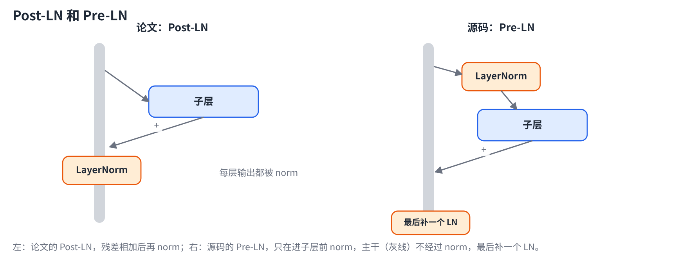
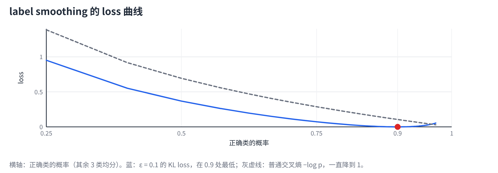
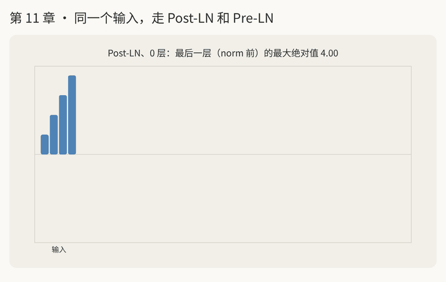

第 11 章 · 读原版源码：The Annotated Transformer 里藏着哪些和论文不一样的地方
本地运行
git clone https://github.com/wikieden/beyond-transformer
cd beyond-transformer/code/notebooks
pip install jupyterlab torch numpy
jupyter lab ch11_annotated_transformer.ipynb也可以下载后直接用 VS Code 打开 .ipynb 运行。需要 GPU 的章节在 Colab 里选「代码执行程序 → 更改运行时类型 → GPU」。
本章回答：前作讲的原版 Transformer，落到真正能跑的 PyTorch 代码里是什么样？The Annotated Transformer 这份最出名的逐行注释实现，函数怎么和论文、前作的章节对上？它的残差连接为什么是“先 norm”，和论文写的不一样？它的 LayerNorm 和 PyTorch 自带的差在哪？label smoothing 和原版的学习率公式在代码里怎么写？
讲解日期：2026-11-25 · 上一章：第 10 章 残差流与 induction head · 下一章：第 12 章 Pre-LN
对应原文：The Annotated Transformertransformer-deep-dive/materials/code/annotated-transformer/repo/the_annotated_transformer.py：EncoderDecoder L230、Generator L256、clones L286、Encoder L292–L305、LayerNorm L315–L328、SublayerConnection L344–L357（“Note for code simplicity the norm is first as opposed to last”）、subsequent_mask L441、attention L519、MultiHeadedAttention L589、Embeddings L704–L711（乘 √d_model）、make_model L822–L845、rate L1058–L1068、LabelSmoothing L1148–L1172、置信度惩罚的例子 L1228–L1240、训练用 smoothing = 0.1 L1644；AIAYN §5.3 式 3 L363–L376、§5.4 label smoothing L409–L410
本章缩写：Post-LN = Post-LayerNorm（先加残差再 LayerNorm，原版论文的写法）；Pre-LN = Pre-LayerNorm（先 LayerNorm 再进子层，结果加回残差）；ε_ls = label smoothing 的平滑系数；KL = Kullback–Leibler divergence（KL 散度：两个分布差多少）；std = standard deviation（标准差）；ddof = delta degrees of freedom（自由度修正：除以 n − ddof）；Noam（原版学习率调度的俗称，取自作者之一 Noam Shazeer）。全部缩写见 附录 · 缩写与术语表
讲解
第一步：源码地图：函数 ↔ 论文 ↔ 前作章节（2026-11-25）
类比：拿着说明书（第 7 章）对实物。 第 7 章的伪代码是“应该怎么拼”，这份源码是“真的拼出来的样子”。先把零件和章节对上，后面几步再看它在哪几处偷偷改了做法。
| 源码 | 行号 | 做什么 | 前作 / 本书 |
|---|---|---|---|
EncoderDecoder |
L230 | 整个模型：编码、解码、生成 | T21 |
Generator |
L256 | 线性层 + log_softmax，乘回词表 | T22 |
clones |
L286 | 把一层深拷贝 N 份 | — |
Encoder |
L292 | N 层 + 最后一个 LayerNorm | T21 |
LayerNorm |
L315 | 自己写的 LayerNorm（第三步） | T19 |
SublayerConnection |
L344 | 残差 + norm（第二步） | T18 |
subsequent_mask |
L441 | 因果 mask | T17 |
attention |
L519 | 缩放点积注意力 | T8–T12 |
MultiHeadedAttention |
L589 | 多头 | T13 |
PositionwiseFeedForward |
L677 | FFN | T20 |
Embeddings |
L704 | 查表后乘 √d_model | T22 |
PositionalEncoding |
L748 | sin / cos 位置编码 | T15 |
make_model |
L822 | N = 6、d = 512、d_ff = 2048、h = 8，Xavier 初始化 | T24 |
rate |
L1058 | 原版学习率（第五步） | 第 4 章 |
LabelSmoothing |
L1148 | 平滑后的目标 + KL loss（第四步） | 第 1 章 |
Embeddings 乘 √d_model（L711）是原版论文 §3.4 的做法：嵌入表的数初始化得很小，乘一下让它和位置编码的量级相当。
一句话：The Annotated Transformer 一个类对应论文的一个零件，按 L230 到 L1172 的顺序读，就是把前作 24 章从头拼一遍。
第二步：SublayerConnection 其实是 Pre-LN（2026-11-25）
论文写的是 Post-LN：每个子层的输出是 \(\text{LayerNorm}(x + \text{Sublayer}(x))\)。源码的注释也照抄了这句话，可代码（L357）是：
return x + self.dropout(sublayer(self.norm(x)))
先 norm、进子层、再加回 x：这是 Pre-LN。类的 docstring 里自己承认了（L347–L348）：“为了代码简单，norm 放在前面而不是后面”。所以 Encoder 最后还要补一个 LayerNorm（L298、L305），因为 Pre-LN 的主干上从来没被 norm 过。
数字演示（x = [1, 2, 3, 4]，子层是“乘 3”）：
| 写法 | 公式 | 输出 |
|---|---|---|
| 论文 Post-LN | LN(x + 3x) | [−1.3416, −0.4472, 0.4472, 1.3416] |
| 源码 Pre-LN | x + 3·LN(x) | [−3.0249, 0.6584, 4.3416, 8.0249] |
Post-LN 每层的输出都被拉回均值 0、方差 1；Pre-LN 的主干 x 原样往下传，每层只加一点东西，越往后数值越大（所以最后要补一个 norm）。这个“偷懒”的改动其实是对的：Pre-LN 更好训、不太依赖 warmup，后来几乎所有大模型都改成了 Pre-LN（第 12 章细讲为什么）。

图 11-1 · 左：论文的 Post-LN，LayerNorm 在残差加法之后，主干每层都被 norm；右：源码的 Pre-LN，LayerNorm 只在进子层之前，主干（灰色粗线）不经过 norm，最后补一个 LayerNorm一句话：Annotated Transformer 的 SublayerConnection 是 x + Sublayer(LN(x))，也就是 Pre-LN，和论文的 Post-LN 不同，所以 Encoder、Decoder 最后各补了一个 LayerNorm。
第三步：它的 LayerNorm 和 nn.LayerNorm 不完全一样（2026-11-25）
源码自己写的 LayerNorm（L315–L328）：
PyTorch 的 nn.LayerNorm：
两处不同：标准差除以 n − 1（x.std() 默认无偏）还是 n；ε 加在根号外还是根号里。
数字演示（x = [1, 2, 3, 4]，a = 1、b = 0）：
| 写法 | 标准差 | 输出 |
|---|---|---|
| 源码 | √(5/3) ≈ 1.2910 | [−1.1619, −0.3873, 0.3873, 1.1619] |
| nn.LayerNorm | √(5/4) ≈ 1.1180 | [−1.3416, −0.4472, 0.4472, 1.3416] |
n = 4 时差了约 13%；d = 512 时只差 0.1%。可学习的 a、b 会吸收这点差别，训练效果几乎一样，但拿这份代码的权重去对 nn.LayerNorm 的输出，数字不会完全对上。a1 用的 RMSNorm 又是另一种写法（第 13 章）。
一句话：源码的 LayerNorm 用无偏标准差、ε 在根号外，nn.LayerNorm 用有偏方差、ε 在根号里；宽度大时差别很小，但逐位对数字时要注意。
第四步：label smoothing：别让模型太自信（2026-11-25）
原版论文 §5.4（L409–L410）：训练时用 ε_ls = 0.1 的 label smoothing，困惑度变差，但 BLEU 变好。
做法（L1160–L1166）：目标分布不再是 one-hot，而是
- 正确类给 1 − ε_ls = 0.9；
- 剩下的 0.1 平均分给其他类（除去正确类和 padding，所以除以词表大小 − 2）；
- padding 那一列清零。
再用 KL 散度（nn.KLDivLoss）比较模型的分布和这个目标分布（和交叉熵只差一个常数）。
数字演示（词表 5，padding 是 0，正确类 2）：目标分布 = [0, 0.0333, 0.9, 0.0333, 0.0333]。
| 模型的预测 | KL loss |
|---|---|
| [0.01, 0.05, 0.9, 0.02, 0.02]（正确类 0.9） | 0.0205 |
| [0.001, 0.001, 0.996, 0.001, 0.001]（几乎 100% 自信） | 0.2594 |
太自信反而被罚（源码 L1228–L1240 的例子）：让正确类的概率从 0.25 一路涨到 0.97，loss 先降后升，在正确类概率 0.900 时最小。没有平滑时，loss 会一直降到概率为 1；有了平滑，模型最多“自信到 90%”就够了，logits 不会被推向无穷大。

图 11-2 · 横轴是模型给正确类的概率（其余 3 类均分剩下的），纵轴是 loss。蓝：label smoothing（ε = 0.1）的 KL loss，在 0.9 处最低，再往上反而变大；灰虚线：普通交叉熵，一直降到概率为 1一句话：label smoothing 把目标从 one-hot 改成“正确类 0.9、其余均分 0.1”，模型自信超过 0.9 反而被罚，防止 logits 无限变大。
第五步：原版的学习率：Noam 调度（2026-11-25）
rate()（L1058–L1068）就是 AIAYN 式 3（L363–L376）：
两段：step < warmup 时取后一项，线性上升；之后取前一项，按 1/√step 下降；两段在 step = warmup 时相等，那里是最高点。
数字演示（d = 512、warmup = 4000、factor = 1）：
| step | 1 | 1,000 | 4,000 | 16,000 | 100,000 |
|---|---|---|---|---|---|
| lr | 1.75e-7 | 1.75e-4 | 6.99e-4 | 3.49e-4 | 1.40e-4 |
峰值 = 512^{-0.5} × 4000^{-0.5} ≈ 7.0 × 10⁻⁴；4 倍步数时降到一半（1/√4）。和第 4 章的 cosine 调度比：都有 warmup，但 Noam 的下降是 1/√step，永远不到底；cosine 在 Tc 步时降到预先定好的 αmin。源码里 step = 0 时改成 1（L1063–L1064），避免 0 的负数次方。
场景代码：源码里把 rate 接到 PyTorch 的调度器上（真实库调用的写法；本书环境没装 torch，没跑过）：
optimizer = torch.optim.Adam(model.parameters(), lr=1.0, betas=(0.9, 0.98), eps=1e-9)
lr_scheduler = LambdaLR(optimizer, lr_lambda=lambda step: rate(step, model_size=512, factor=1.0, warmup=4000))
# 基础 lr 设成 1，真正的学习率完全由 rate() 决定
一句话：原版学习率 = d^{-0.5}·min(step^{-0.5}, step·warmup^{-1.5})：warmup 步内线性升到峰值，之后按 1/√step 下降。
动画演示：同一个输入走 Post-LN 和 Pre-LN

可交互版：animations/11-annotated-transformer.html（滑块：叠几层；下拉切换 Post-LN / Pre-LN）。
怎么看：
- 每层的子层都是“乘 3 再加一点偏移”（第二步）；
- Post-LN：每层之后都被 norm，柱子的高度一直在 ±1.5 以内；
- Pre-LN：主干原样往下传，每层加一点，柱子越来越高，最后一层补的 LayerNorm 才把它拉回来。
练习与作答记录
题 1（第二步）：x = [0, 2]，子层是“加 1”（f(v) = v + 1），分别算 Post-LN 和 Pre-LN 的输出（LayerNorm 用有偏方差、ε 忽略）。
题 2（第三步）：x = [2, 4, 6]，源码的 LayerNorm 和 nn.LayerNorm 的输出各是多少（ε 忽略）？
题 3（第四步）：词表 6、padding 是 0、正确类 3、ε_ls = 0.2，目标分布是什么？
题 4（第五步）：d = 1024、warmup = 8000，学习率的峰值是多少，在第几步？第 32000 步是多少？
口诀
一个类一个零件，L230 读到 L1172，前作从头拼一遍。
残差先 norm 再子层，源码偷懒成了 Pre-LN，最后补一个 norm。
源码 LayerNorm 无偏 std、ε 在根号外，宽了才和官方一样。
平滑目标零点九，其余均分；自信过了九成反而罚。
Noam 调度：线性升到 warmup，之后一除根号步。
本章复习卡片
必背：B38–B39（B38 SublayerConnection 的 Pre-LN 写法与 LayerNorm 的两处差别；B39 label smoothing 的目标分布与 Noam 学习率）。练习做完后，按答错、卡住的地方再补。
附录 · 延伸阅读
留给以后深入学习用，不影响本章主线。★ 是建议先读的。
推荐阅读
| 读什么 | 读哪里 | 读它为了什么 |
|---|---|---|
| ★ The Annotated Transformer（Harvard NLP，2022 版） | L230–L860（模型）；L1058–L1240（训练） | 原版的逐行实现 |
| ★ AIAYN | §3.4 嵌入乘 √d；§5.3 式 3 L363–L376；§5.4 L409–L410 | 源码对照的论文原文 |
| Rethinking the Inception Architecture（Szegedy 等 2016） | label smoothing 一节（本地没有文本版） | label smoothing 的出处 |
| 本书 第 4 章、第 12 章 | 调度；Pre-LN 为什么好训 | 本章两个改动的来龙去脉 |
数学原理
- Pre-LN 的主干：x_L = x_0 + Σ f_l(LN(x_l))，主干不经过 norm，方差随层数增长。
- 无偏 vs 有偏：std_无偏 = std_有偏 × √(n/(n − 1))，n 大时趋于 1。
- label smoothing 的最优：目标分布 q 下，KL(q‖p) 在 p = q 时最小，所以正确类概率的最优值就是 1 − ε_ls。
- Noam 调度的峰值：两项在 step = warmup 处相等，峰值 = d^{-0.5}·warmup^{-0.5}。
公式清单
| 公式 | 意思 |
|---|---|
| \(\text{LN}(x + \text{Sublayer}(x))\) | 论文的 Post-LN |
| \(x + \text{Sublayer}(\text{LN}(x))\) | 源码的 Pre-LN |
| \(a(x - \mu)/(\text{std}_{n-1} + \varepsilon) + b\) | 源码的 LayerNorm |
| \(q = (1 - \varepsilon_{ls})\cdot\text{onehot} + \frac{\varepsilon_{ls}}{V - 2}\cdot(\text{其余})\) | 平滑后的目标 |
| \(d^{-0.5}\min(\text{step}^{-0.5}, \text{step}\cdot\text{warmup}^{-1.5})\) | Noam 学习率 |
代码对照：把本章的数字用代码算一遍
NumPy。代码在仓库本地
beyond-transformer/solutions/chapter-code/ch11_annotated_transformer.py，配套测试tests/test_ch11.py，notebook 在notebooks/ch11_annotated_transformer.ipynb：
bash cd beyond-transformer/solutions/chapter-code uv run python ch11_annotated_transformer.py uv run pytest tests/test_ch11.py
讲义 ↔ 代码：
| 讲义 | 公式 | 写法 | 跑出来 |
|---|---|---|---|
| 第二步 Post-LN vs Pre-LN | 两种残差 | post_ln、pre_ln |
[−1.34, …] vs [−3.02, …, 8.02] |
| 第三步 两种 LayerNorm | n − 1 vs n | layer_norm_annotated、layer_norm_torch |
−1.1619 vs −1.3416 |
| 第四步 label smoothing | 目标分布 + KL | smoothed_target()、kl_loss()、confidence_curve() |
最低点在 0.900 |
| 第五步 Noam 调度 | min 两项 | rate(step) |
峰值 6.99e-4 |
关键几行：
return x + sub(layer_norm_torch(x)) # 源码的 SublayerConnection：先 norm
return (x - x.mean()) / (x.std(ddof=1) + eps) # 源码的 LayerNorm：无偏 std，ε 在外
d = np.full(size, smoothing / (size - 2)); d[target] = 1 - smoothing; d[padding_idx] = 0
return factor * model_size**-0.5 * min(step**-0.5, step * warmup**-1.5)
代码里才看得到的 2 件事：
x.std()的默认值：PyTorch 的Tensor.std()默认无偏（除以 n − 1），NumPy 的np.std()默认有偏（除以 n）。同一个名字，两个库默认不一样，这里用ddof=1对齐源码。- KLDivLoss 吃的是 log 概率：源码的
Generator输出 log_softmax，LabelSmoothing直接把它传给KLDivLoss；q = 0 的格（padding）不贡献 loss。
自己改一改（不影响练习答案）：
- 把
confidence_curve的 smoothing 改成 0.3，最低点移到哪？ - 把
pre_ln叠三层（每层子层都乘 3），主干上的数长到多大？